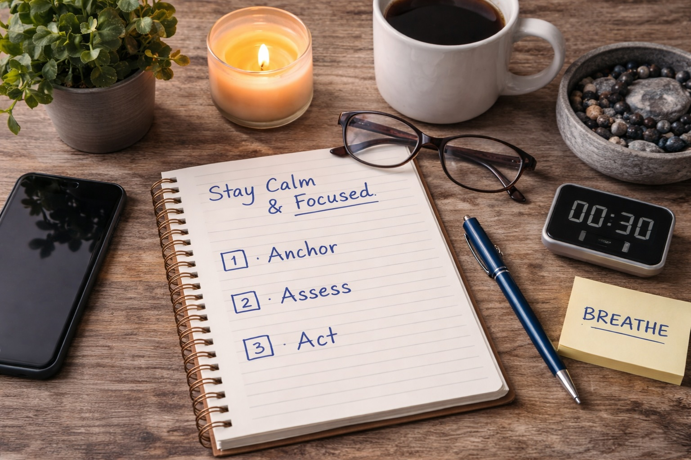

Quick take
Calm doesn’t mean slow. Calm leaders often act faster because they’re not burning energy on panic, rework, or conflict. The goal is steady attention + simple decisions + clean follow-through.
The CALM Protocol (60–180 seconds)
C — Check your state
Ask: “Am I rushed, angry, or afraid?” If yes, treat the emotion as data — then reduce it before you decide.
A — Anchor your attention
Slow exhale breathing for 6–10 cycles, shoulders down, jaw unclench. Give your body a clear “safe enough” signal.
L — List the decision
Write one sentence: “The decision is ___.” Add two bullets: must decide now vs. can wait.
M — Make the next step small
Choose the smallest action that increases options (gather one fact, call one person, set one boundary, run one test).
Tip: When you’re under stress, your brain craves certainty. Replace “certainty” with “next step.”
Three deep dives
Use these as “chapters” you can revisit. The first builds the nervous-system baseline so you can remain stable under pressure. The second is a real-time playbook for stabilizing yourself when stress or uncertainty hits. The third is a framework for thinking clearly when information conflicts, systems weaken, and narratives compete.
Calm — Foundations
How stress physiology works, what “state” does to perception, and the simplest habits that protect clarity.
Read article →

Calm — Practical
A concrete toolkit for information triage, decision checkpoints, and short scripts that reduce conflict.
Read article →
Calm — Clarity
A practical framework for thinking clearly when information conflicts, systems weaken, and narratives compete.
Read article →
Navigating Change Calmly
A complementary track focused on transitions — personal, financial, and professional — with calm structure. These articles are not about speed or reinvention. They’re about stability, clarity, and preserving options while things shift.

Change Without Chaos
A practical playbook for transitions: stabilize first, reduce noise, preserve options, and move deliberately without panic or overcorrection.
Read article →

When to Slow Down
How to recognize false urgency, pause strategically, and avoid irreversible mistakes during periods of change.
Read article →

Stability Before Optimization
Why reducing volatility comes before improving performance — and how stability makes improvements stick.
Read article →
Want scenario drills tailored to your life or organization? Contact sales@tevesconsulting.com.